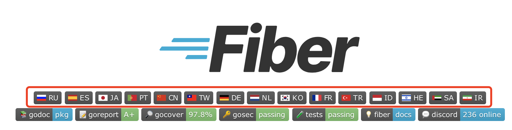

Go Fiber 框架系列教程 01: 和 Express 对比学习
大家好，我是 polarisxu。
每次发框架相关的文章，总有人提到 Go Fiber 框架。于是乎，学习了下 Fiber，感觉确实挺不错的。因此写下这个 Fiber 系列。
Fiber 项目地址：https://github.com/gofiber/fiber ，目前 Star 数 15.3k+。
01 Fiber 框架
这是一个 Go 语言 Web 框架，启发自 NodeJS 框架：Express 。该框架基于 FastHTTP 构建，旨在简化、零内存分配和提高性能，以便快速开发。
如果你是一位 NodeJS 开发者，想学习 Go，这个框架应该很适合你，同时这里还有一份专门为 NodeJS 开发者准备的 Go 学习资料：https://github.com/miguelmota/golang-for-nodejs-developers
这个框架是 2020 年 1 月份启动开发的，没想到短时间就受到很多人关注。从 README 的多国语言就可见一斑：

从第三方性能测试结果看，Fiber 的表现比 Gin、Echo 好很多。这里有详细的 Benchmark 测试说明：https://docs.gofiber.io/extra/benchmarks 。
摘抄一段官方关于 Fiber 的哲学：
Fiber 作为一个 Web 框架 ，是按照极简主义的思想并遵循 UNIX 方式创建的，因此新的 gopher 可以在热烈和可信赖的欢迎中迅速进入 Go 的世界。
Fiber 受到了互联网上最流行的 Web 框架 Express 的启发 。我们结合了 Express 的易用性和 Go 的原始性能 。如果您曾经在 Node.js 上实现过 Web 应用程序(使用 Express 或类似工具)，那么许多方法和原理对您来说应该非常易懂。
我们关注 整个互联网 用户在 issues 和 Discord channel 的消息，为了创建一个迅速，灵活以及友好的 Go Web 框架，满足任何任务，最后期限和开发者技能。就像 Express 在 JavaScript 世界中一样。
所以，总结一下 Fiber 的特点（优势）：
- 强大的路由
- 静态文件服务
- 极致高性能
- 内存占用低
- API 接口
- 中间件和 Next 支持
- 快速服务器端编程
- 支持各种模版引擎
- WebSocket 支持
- 频率限制器
- 文档被翻译为 16 种语言
不过有两点需要注意，Fiber 使用了 unsafe 和 fasthttp，所以可能和 Go 最新版本有兼容性问题。目前 Fiber 2.18.0 兼容 Go 1.14 到 Go1.17；但 fasthttp 和 net/http 是不兼容的，因此 net/http 生态的项目无法使用在 fiber 上。
02 和 Express 的简短比较
既然是受 Express 启发，那就和它比较下。
Hello World
基于 Express 的 Hello World 程序：
const express = require("express"); // 引用 Express library
const app = express(); // 创建一个 Express 实例
// 路由：/ endpoint
app.get("/", (req, res) => {
res.send("Hello World!");
});
// 在 3000 端口启动服务
app.listen(3000);
确实挺简单，几行代码就搞定了一个 Web 服务。
现在用 Fiber 实现类似上面的功能：
package main
import "github.com/gofiber/fiber/v2" // 注意，最新版本是 v2.18.0，所以有 v2
func main() {
app := fiber.New() // 创建一个 Fiber 实例
// 路由：/ endpoint
app.Get("/", func(c *fiber.Ctx) error {
return c.SendString("Hello, World!")
})
// 在 3000 端口启动服务
app.Listen(":3000")
}
目前，几乎所有 Go 框架都是类似的路子，没有太多好解释的。
Fiber 启动后终端的输出结果：
$ go run main.go
┌───────────────────────────────────────────────────┐
│ Fiber v2.18.0 │
│ http://127.0.0.1:3000 │
│ (bound on host 0.0.0.0 and port 3000) │
│ │
│ Handlers ............. 2 Processes ........... 1 │
│ Prefork ....... Disabled PID ............. 83538 │
└───────────────────────────────────────────────────┘
路由和端点
任何 Web 应用程序、微服务或 API 都包含一个基于描述 HTTP 方法的端点（endpoint）和处理程序函数的路由系统，只有在这个端点接收到客户端的请求后才会执行这个路由系统。
除了上面的 HTTP GET 方法，Express 和 Fiber 还支持其他 HTTP 基本方法（当然还支持其他 HTTP 方法）。
// Endpoint for POST method
app.post("/", (req, res) => {
// function that stores a new data
});
// Endpoint for PUT method
app.put("/", (req, res) => {
// function that replaces the existing data
});
// Endpoint for PATCH method
app.patch("/", (req, res) => {
// function that replaces part of the existing data
});
// Endpoint for DELETE method
app.delete("/", (req, res) => {
// function that deletes the data
});
对应的 Fiber 代码：
// Endpoint for Post method
app.Post("/", func(c *fiber.Ctx) error {
// function that stores a new data
})
// Endpoint for PUT method
app.Put("/", func(c *fiber.Ctx) error {
// function that replaces the existing data
})
// Endpoint for PATH method
app.Path("/", func(c *fiber.Ctx) error {
// function that replaces part of the existing data
})
// Endpoint for DELETE method
app.Delete("/", func(c *fiber.Ctx) error {
// function that deletes the data
})
中间件
中间件函数可以访问 HTTP 请求和响应对象，以及调用下一个中间件函数。一般地，中间件函数执行如下动作：
- 执行我们想让其执行的代码
- 对请求或响应对象做任何修改
- 完成请求-响应循环
- 调用堆栈中的下一个中间件函数
看一个中间件的例子，它们在 Express 和 Fiber 中如何写。
app.use(function (req, res, next) {
// 打印当前时间
console.log("Date:", Date.now());
next();
});
对应 Fiber 的代码如下：
app.Use(func(c *fiber.Ctx) error {
// 打印当前时间
fmt.Println("Date:", time.Now())
return c.Next()
})
服务静态文件
Web 应用经常会有静态文件，它们需要能够被请求，比如图片、css/js 文件等。
服务静态文件，一般基于如下几个点：
- 一个存储静态文件的文件夹
- 在 Web 程序中指定挂载点
- 对挂载点进行引用
看看 Express 如何做到的：
app.use(
"/static", // mount address
express.static("public") // path to the file folder
);
对应 Fiber 的代码如下：
app.Static(
"/static", // mount address
"./public", // path to the file folder
)
因此，我们对 /static/ 下的文件访问，都对应到 public 下的文件。比如：
http://localhost:3000/static/images/background.jpg对应是public/images/background.jpg文件
使用模板
目前，Go 很多框架对各种模板引擎支持是不够的。但 Fiber 做到了和 Express 类似，支持大量开箱即用的模板引擎，比如：Pug 、Jade 、Mustache 和 Handlebars 等。
以 Pug 为例，看看 Express 和 Fiber 如何使用的。（注意，以下代码会查找 ./views 目录下的 index.pug 文件，没有该文件会报错）
app.set("view engine", "pug");
// 初始化模板文件夹
app.set("views", "./views");
app.get("/", (req, res) => {
res.render("index", {
title: "Hey!",
message: "This is the index template.",
});
});
对应的 Fiber 代码如下（注意，Fiber 对模板的支持是 https://github.com/gofiber/template 包）：
// 基于 ./views 文件夹初始化 Pug 模板引擎
engine := pug.New("./views", ".pug")
app := fiber.New(fiber.Config{
Views: engine, // 设置模板引擎
})
app.Get("/", func(c *fiber.Ctx) error {
return c.Render("index", fiber.Map{
"Title": "Hey!",
"Message": "This is the index template.",
})
})
03 小结
本文简单介绍了 Fiber 的一些特性。因为 Fiber 是受 Express 启发实现的，因此和 Express 进行了对比。不知道你对 Fiber 有什么感觉？
下篇文章会较详细的介绍 Fiber 的一些特性。
参考